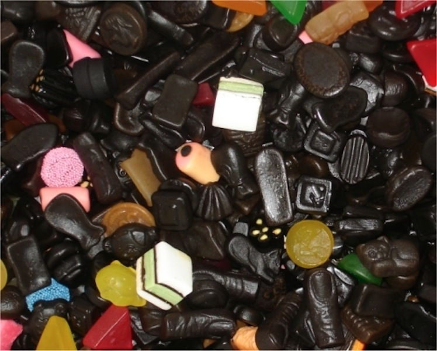

In de drop op de foto zitten vele kleuren drop
|  |
|
Drop is echt iets Nederlands, veel landen ter noorden van Nederland zoals Noorwegen en Zweden,
Wordt steeds meer drop gegeten. Maar in de landen zoals Frankrijk, Spanje en italie, vinden mensen
het maar een zwart vies en plakkerig snoepje.
Maar daar vind je weer snoep in alle kleuren en veel Nederlanders
laten daarom ook familie drop opsturen als ze zijn verhuisd
naar het buitenland waar ze geen drop eten. Zo leren steeds
meer mensen drop kennen.
Meer weten? Volg onderstaande link
| http://www.Venzodrop.nl/meeroverdefabriek |
|---|
| http://nl.wikipedia.org/wiki/Drop |